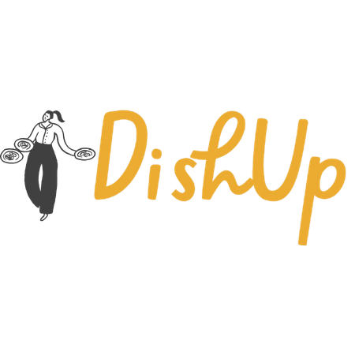
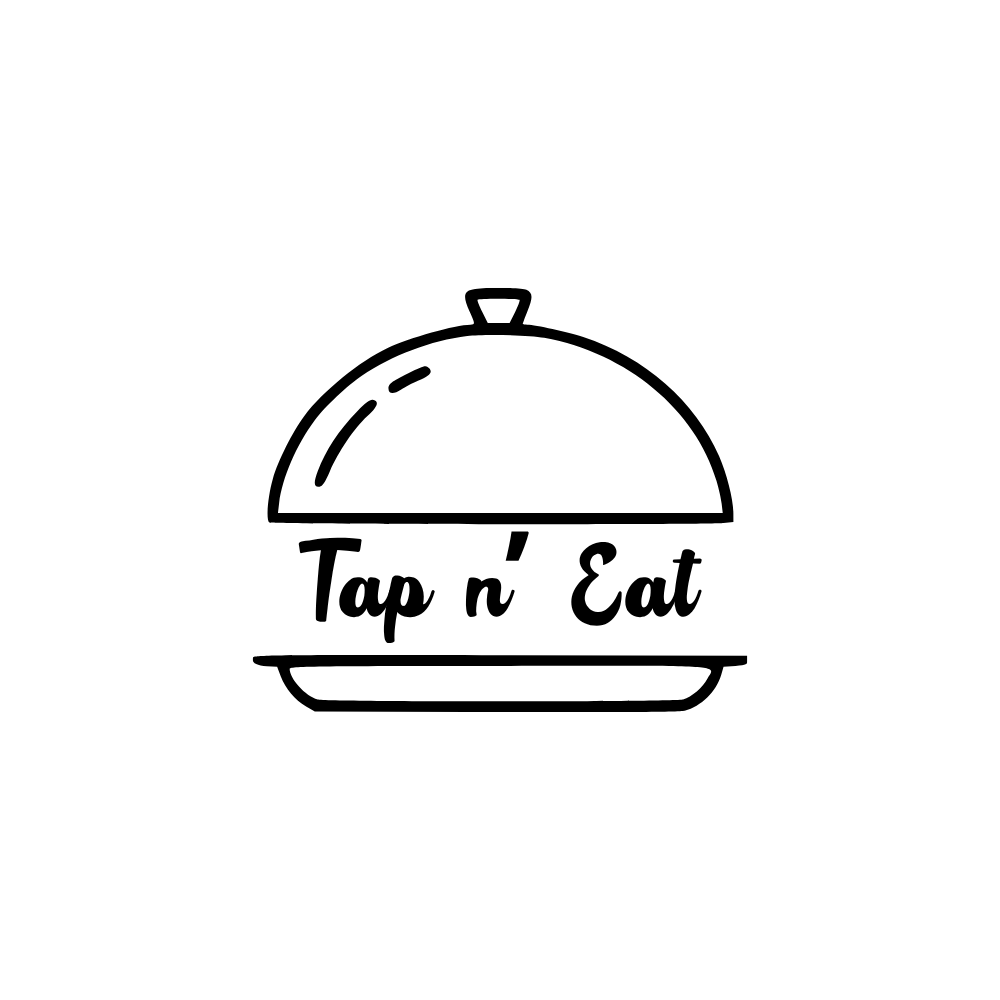

Hola, soy
Alejandra Leal Armenta.
Actualmente soy estudiante de Ingeniería en el Instituto Tecnológico de Sonora (ITSON), donde curso la carrera de Ingeniería en Software.
Me interesa especialmente el análisis de problemas y la identificación de requisitos para comprender a profundidad las necesidades de un proyecto y plantear soluciones adecuadas.
Disfruto utilizar el pensamiento creativo para idear formas de mejorar procesos, hacerlos más eficientes y facilitar su implementación.
A través de proyectos académicos he desarrollado experiencia utilizando herramientas como Java, Spring Boot, Git, GitHub y Figma, además de fortalecer mis habilidades de comunicación, organización y trabajo en equipo.
Me considero una persona responsable, organizada y con disposición para aprender continuamente y afrontar nuevos retos profesionales.
Habilidades
Tecnologías y Áreas de Dominio
Frontend
- HTML
- CSS
Backend
- Java
- Python
Base de datos
- SQL
- MySQL
- MongoDB
Soft Skills
- Comunicación efectiva
- Pensamiento crítico
- Liderazgo
- Capacidad de análisis
- Trabajo en equipo
Formación
Estudios
| Año | Institución | Estudios | Descripción |
|---|---|---|---|
| 2021 - 2024 | CBTis 37 | Técnico en Programación | Durante mis tres años de bachillerato, adquirí conocimientos y habilidades en programación, incluyendo estructuras de programas, JavaScript, HTML, CSS, diagramas de flujo y desarrollo de aplicaciones sencillas para Android. Además, concluí mis estudios con el título de Técnico en Programación. |
| 2024 - Actualidad | ITSON | Ingeniería en Software | Actualmente curso la carrera de Ingeniería en Software, donde he adquirido conocimientos en diferentes áreas del desarrollo de software. He trabajado con tecnologías como Java, Python, HTML, CSS, SQL y MongoDB, además de desarrollar proyectos relacionados con bases de datos, aplicaciones y diseño de interfaces. También he fortalecido habilidades no técnicas como el trabajo en equipo, la resolución de problemas, el pensamiento crítico, la toma de decisiones, el análisis de requisitos y otras relacionadas con el desarrollo de software. |
Proyectos

DishUp
DishUp es un sistema desarrollado en Java para la gestión de comandas de un restaurante. Su objetivo es administrar el flujo de los pedidos desde su creación hasta su envío a cocina, facilitando el seguimiento de las comandas dentro del restaurante. El proyecto utiliza MongoDB como base de datos y una arquitectura por capas con DAO, BO y Fachada, desarrollado como una aplicación multimódulo con Maven.

Tap n' eat
Tap N Eat es un sistema desarrollado en Java para la gestión de clientes y productos de un restaurante. Permite registrar y administrar clientes, agregar, editar y eliminar productos desde la aplicación, además de mantener un registro organizado de la información de los clientes. El proyecto fue desarrollado con una arquitectura por capas para facilitar la organización y el mantenimiento del sistema.
Contacto
alejandra.leal262719@potros.itson.edu.mx
644 110 3407